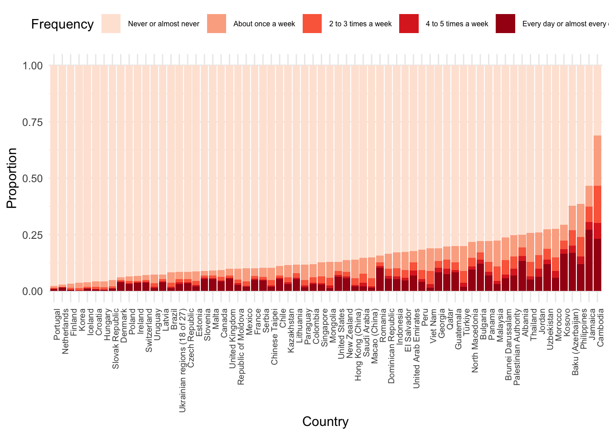

mastemquantblog
About
mastemquantblog
Categories
All
(10)
news
(2)
Order By
Default
Title
Date - Oldest
Date - Newest
Author
Group_work
Back in high school, I didn’t seem to mind working with others on group tasks. In fact, I sometimes even enjoyed this. But over time, something quietly shifted. It wasn’t…
Mar 25, 2025
Zhaoding Ye
Food Security Matters for Education
For a long time, I have been interested in understanding how students access the school system, the conditions under which they learn, and how their backgrounds and daily…
Feb 11, 2025
Manuela Parra Echeverri
Homework in PISA 2022
As a teacher, I often get presented with this question- “Do I really need to do my homework?”. My answers usually range depending on the age of the student and my varying…
Jan 28, 2025
Jon Snell

Welcome To STEM MA Quantitative methods in Educational Research Blog 2025
news
Welcome to the 2025 STEM MA Quantitative methods in Educational Research Blog. Following the success of the blog last year we will continue to use the blog to publish…
Oct 22, 2024
Richard Brock and Peter Kemp
Trends in PISA science scores
I noticed from the PISA results that the Science scores appear to be decreasing, since 2006.
Mar 10, 2024
Katy Bray
Who’s Better Educated, Mum or Dad?
This post looks into the differences between mother’s and father’s education levels across the world. Do mothers or fathers have higher education levels. Do people tend to…
Mar 1, 2024
Owen James-Gray
Differences in PISA mathematics scores in the US and UK
In this graph, we compare the PISA Math scores for two countries, the United Kingdom and the United States, and filter them by gender.
Feb 12, 2024
Manasi Rajan
Gender differences in PISA
I wanted to compare the maths and reading scores and then the science and maths scores and see if there were any gender differences. As expected for both comparisons there…
Feb 7, 2024
Katy Bray
Working Time graph
Looking through the questions asked on the
PISA_2022
dataset I saw that the number of times a student had worked a job during the week was included as
WORKPAY
. I was…
Jan 24, 2024
Owen James-Gray
Welcome To STEM MA Quantitative methods in Educational Research Blog
news
We will use this blog to display student work from the MA STEM Quantitative methods in Educational Research module at King’s College London. You can see the course book here …
Nov 23, 2023
Richard Brock and Peter Kemp
No matching items